DOB 1: initial age gate
UK selected; placeholder stays MM/DD/YYYY.

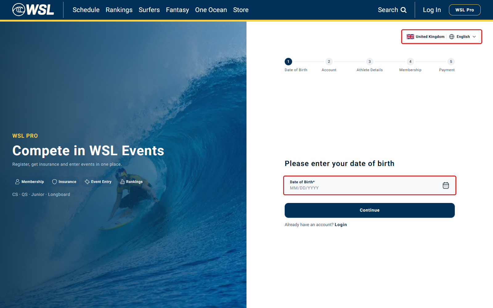
BUG-440a4a138d416e7e · ADD-64 · Tracked in Jira: WSL-9745
Live dev rerun: 21 October 2026 · Original finding: 19 October 2026 · Low / P3
Meeting reference: Item 32 (09-03), as supplied in the original issue.
Apply selected-country formatting to all full calendar dates. The confirmed fixes cover all four DOB fields, membership expiry labels, dashboard event ranges and the event-entry date header.
Red outlines: confirmed month-first displays to change for UK. Green outlines: already day-first; keep in consistency coverage. These are temporary QA outlines on the real page. Original screenshots are linked.
Complete field-by-field change list · Expanded raw observations
| Field / surface | Status | Observed | Required action under UK | Screenshot |
|---|---|---|---|---|
| Initial DOB age gate | CHANGE - live confirmed | MM/DD/YYYY under UK | DD/MM/YYYY; update mask, parser and display | Highlighted field |
| Parent/guardian DOB age gate | CHANGE - live confirmed | MM/DD/YYYY under UK | DD/MM/YYYY; same country-aware picker | Highlighted field |
| For My Child DOB | CHANGE - live confirmed | MM/DD/YYYY under UK | DD/MM/YYYY on child athlete details | Highlighted field |
| Teenager read-only DOB | CHANGE - live confirmed | 04/05/2011 for saved 5 April 2011 | 05/04/2011 under UK; preserve ISO 2011-04-05 | Highlighted field |
| Membership offer: every plan expiry date | CHANGE - live confirmed | All three labels: Expires 12/31/2026 | Expires 31/12/2026 under UK | Highlighted field |
| Athlete dashboard: event start/end ranges | CHANGE - live confirmed | Dec 9–14; unchanged after US-to-UK selection | UK day-first range, e.g. 9–14 Dec; apply to every event card | Highlighted field |
| Event-entry screen: event start/end range | CHANGE - live confirmed | Dec 9–14 in Register: Mid-Atlantic Pro | Use the same country-aware range as the dashboard | Highlighted field |
| Athlete dashboard: personal-information DOB | ALREADY DAY-FIRST - live checked | 20 October 1996 | Keep valid UK long-date display; include in country-format regression coverage | Highlighted field |
| Athlete dashboard: entries-close deadline | ALREADY DAY-FIRST - live checked | 9 Nov 2026 · 17:00 EST | Keep UK day-first formatting and venue timezone; ensure locale consistency | Highlighted field |
| Membership payment confirmation: Active Until | SOURCE REVIEW - regression required | Uses formatLongDate, default en-GB | Include in shared country-format coverage; no fresh paid checkout executed here | Source / scope only |
| Event-entry confirmation / insurance validity dates | SCOPE CHECK - remaining | Date strings depend on entry/coverage data | Apply the same calendar-date policy wherever these dates are rendered; check when a suitable fixture is available | Source / scope only |
| Card expiry on payment forms | KEEP MONTH/YEAR | Provider card expiry uses MM/YY | Keep MM/YY: this is a card-expiry month/year, not a full calendar date | Source / scope only |
The dashboard itself has no country picker in the inspected view. UK was selected on registration first, then the dashboard was opened in the same browser. Event dates stayed unchanged. Already-correct UK long dates are not classified as month-first failures.
UK selected; placeholder stays MM/DD/YYYY.

Parent/Guardian DOB remains MM/DD/YYYY under UK.
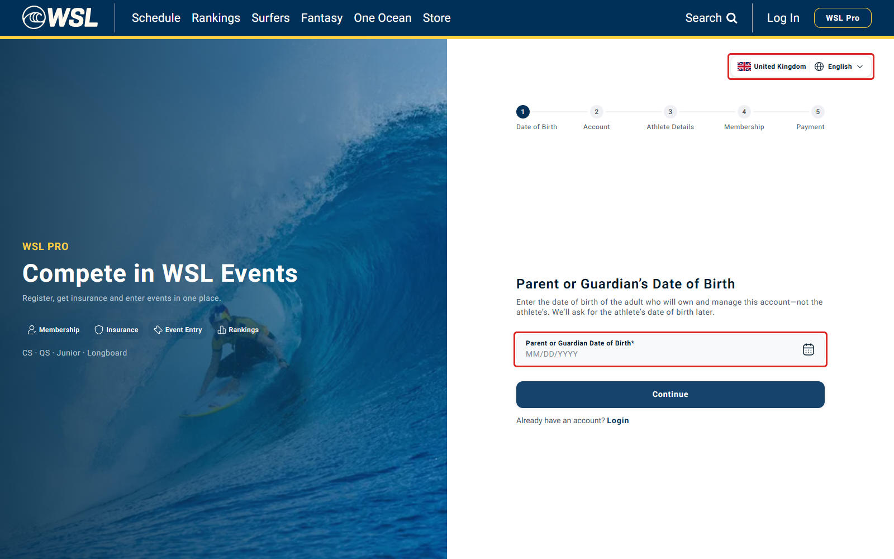
Child DOB remains MM/DD/YYYY under UK.
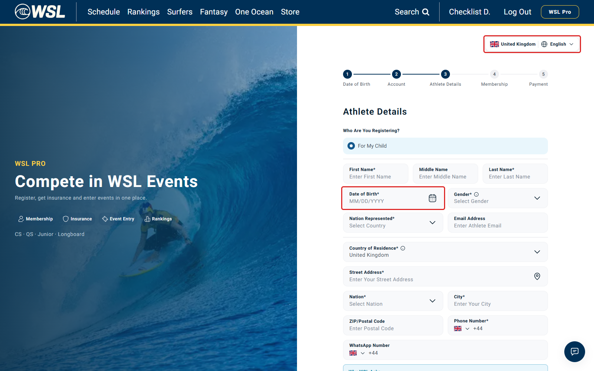
Saved 5 April 2011 displays 04/05/2011; UK should display 05/04/2011.
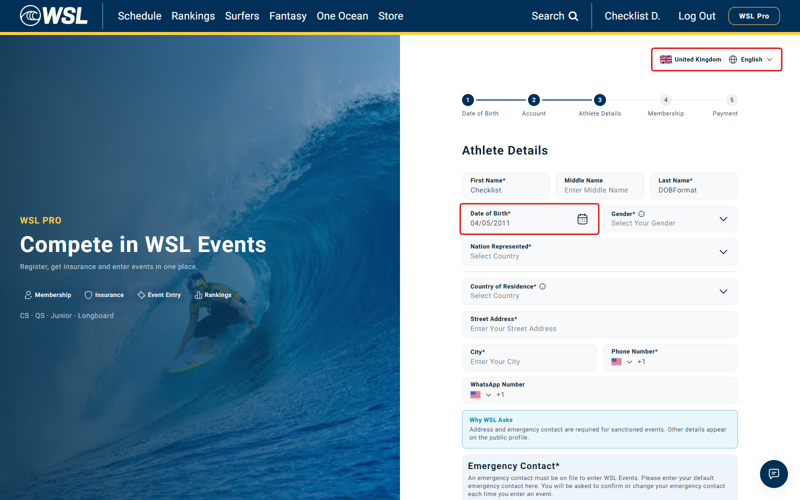
UK selected; membership offer still uses month/day/year expiry labels. Red outlines added in browser.
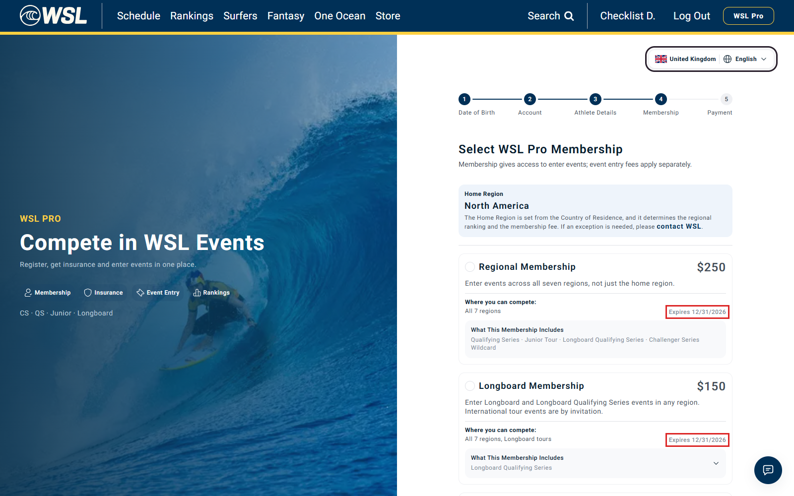
All rendered event date ranges outlined red; all rendered closing-date labels outlined green. Screenshot shows first viewport. UK selected before navigation.
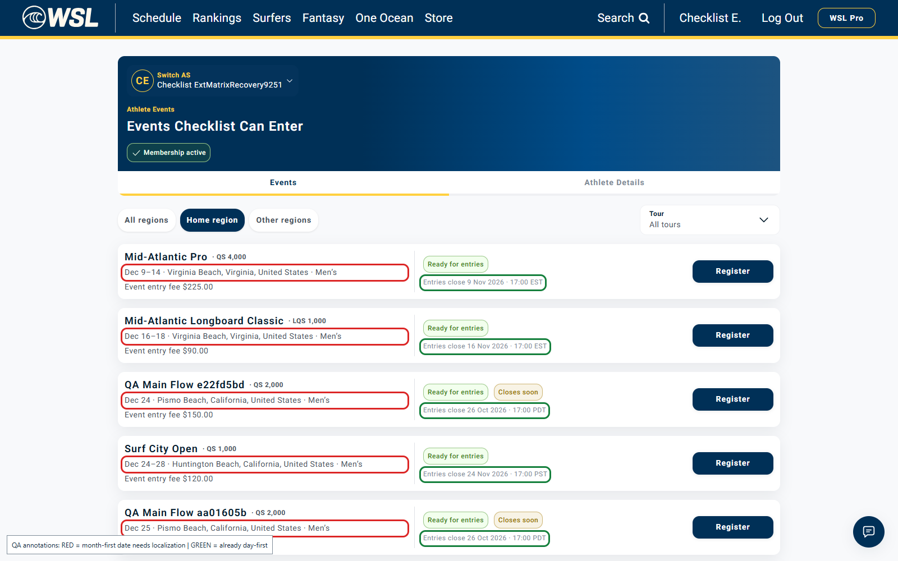
Already uses a long day-first date. Highlighted green: include in consistency coverage, not the slash-format failure.
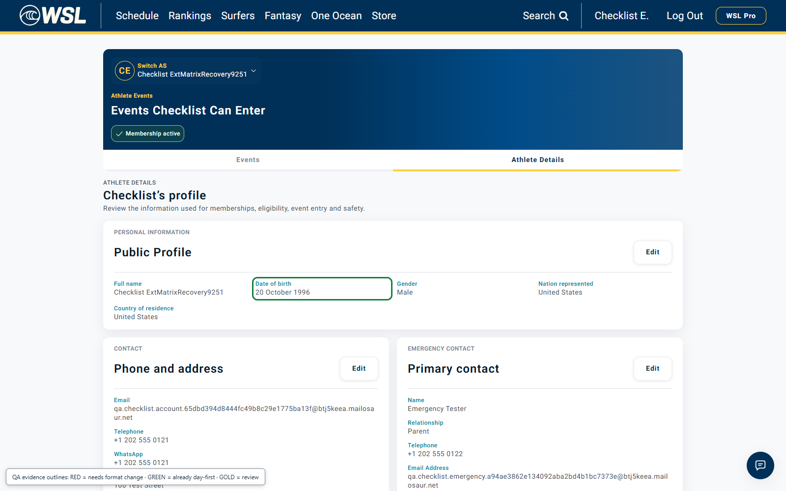
Review event date metadata for country consistency; no entry submitted.
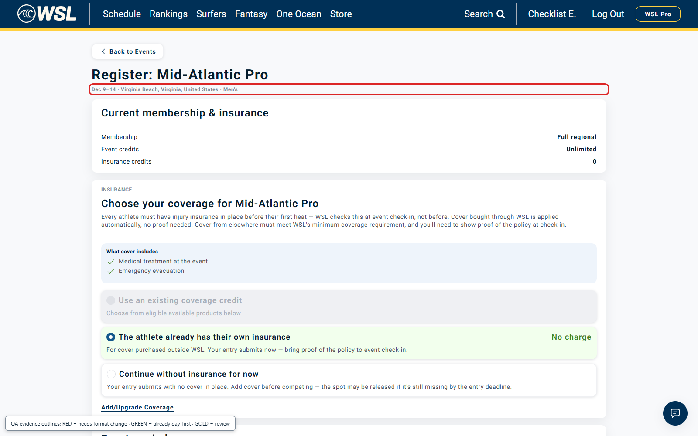
Update the shared DOB picker, its parsing/formatting helpers, membership expiry formatting and API-generated event ranges. Preserve the underlying ISO date and venue timezone. Include profile DOB, deadline text and confirmation/validity dates in regression coverage. Card expiry remains MM/YY.
Eight live screenshot groups. Confirmation/insurance validity rows marked source/scope only remain unverified live. Controlled athlete setup only; no payment or event submission. This evidence is now linked to Jira bug WSL-9745.
Reproduced across all four identified production DOB picker contexts.
Changing the selected country to United Kingdom leaves MM/DD/YYYY in the age gate, parent/guardian gate, child form and read-only teen DOB. The input parser also keeps US order.
Expected: UK DD/MM/YYYY; US MM/DD/YYYY; canonical API/storage value remains YYYY-MM-DD.
Actual dev browser interaction: United States → United Kingdom, rejected UK 25/12/1990, then submission of ambiguous 04/05/1990. The POST payload is captured separately in the raw evidence. This is not a staged evidence viewer.
| Check | Expected under UK | Observed |
|---|---|---|
| DOB placeholder | DD/MM/YYYY | MM/DD/YYYY in all four picker contexts |
| 25/12/1990 | Valid: 25 December 1990 | Please enter a valid date |
| 04/05/1990 submitted at age gate | 1990-05-04 (4 May) | 1990-04-05 (5 April) |
| Saved teen DOB 2011-04-05 | 05/04/2011 | 04/05/2011, read-only |
Changing Country of Residence to UK did not correct the child field either. The UK placeholder failure also reproduced in an en-GB browser, so it is not limited to an en-US browser setting.
| Surface | Verdict / evidence layer | Observed or scope | Source under src/ |
|---|---|---|---|
| Initial athlete/account-holder age gate | LIVE FAIL | MM/DD/YYYY after UK selection; UK-style ambiguous value sent in US order. | features/athlete-registration/components/register/date-of-birth-step.tsx:179 |
| Parent/guardian age gate after under-13 handoff | LIVE FAIL | Parent or Guardian DOB remains MM/DD/YYYY after UK selection. | features/athlete-registration/components/register/date-of-birth-step.tsx:179 |
| For My Child athlete DOB | LIVE FAIL | MM/DD/YYYY after UK selection; also unchanged after residence becomes United Kingdom. | features/athlete-registration/components/register/registering-someone-else.tsx:175 |
| Teenager repeated DOB on Athlete Details | LIVE FAIL | Read-only saved 5 April 2011 remains 04/05/2011 instead of UK 05/04/2011. | features/athlete-registration/components/register/registering-myself.tsx:230 |
| Adult Myself Athlete Details | NO SEPARATE DOB INPUT (source review) | Uses the age-gate/account DOB. The adult branch does not add another editable date picker. | features/athlete-registration/components/register/registering-myself.tsx:221 |
| Saved athlete personal-information card | LIVE CHECK - already day-first | Live dashboard shows 20 October 1996 after UK selection. Already day-first; keep in country-format regression coverage. | features/athlete-registration/lib/athlete-display.ts:52 |
| Guardian consent/contact and attending-guardian forms | NO DOB INPUT FOUND (source inventory) | Names/contact/consent fields do not add another DOB picker in the inspected source. | features/athlete-registration/components/register/guardian-contact.tsx; guardian-consent.tsx; components/events/attending-guardian.tsx |
| UI component showcase | EXCLUDED | /ui/input is a development showcase, not a registration flow. It also uses the shared DatePicker. | app/ui/input/page.tsx:124 |
Four live picker contexts share three source call sites: initial/guardian gates are variants of the same component. Display-only and source-only rows are not labelled as live passes.
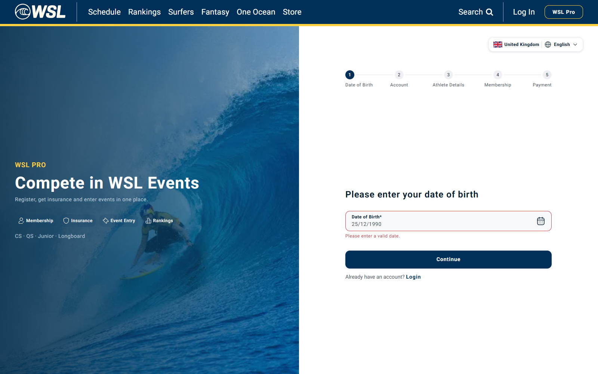
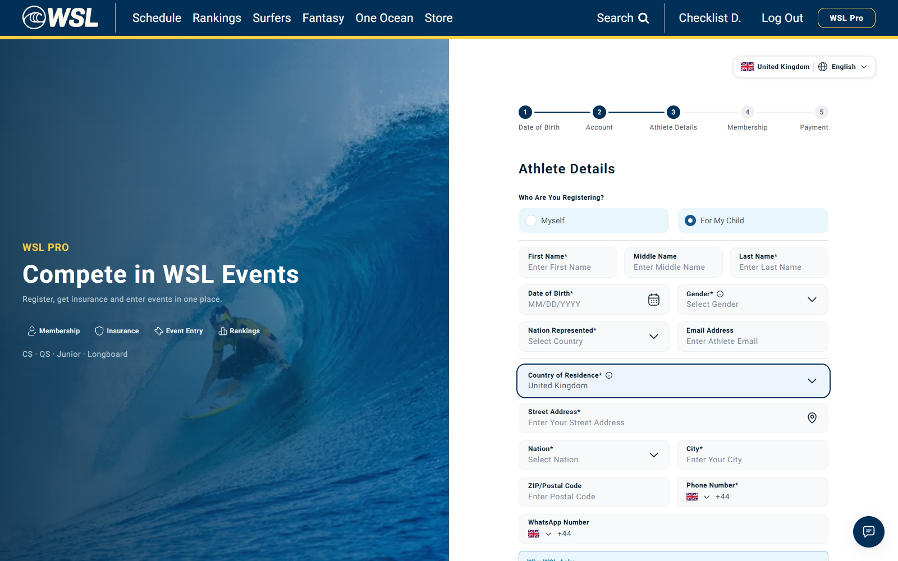
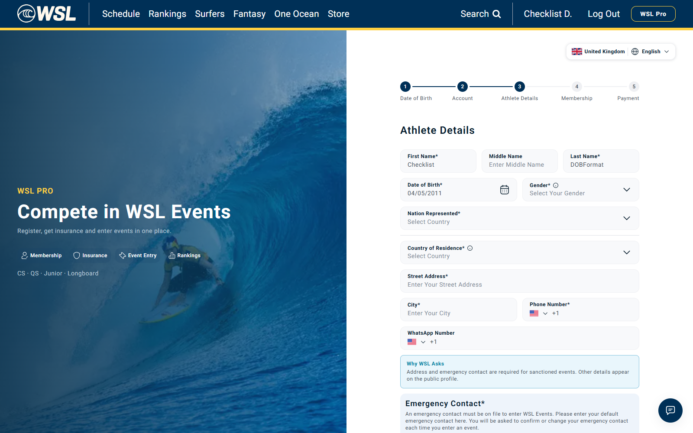
Local source findings (deployed revision not verified): 1. src/components/ui/date-picker.tsx:70 defaults placeholder to MM/DD/YYYY; line 78 defaults locale to en-US. Its change/blur/display logic calls non-localized mask/parse/format helpers. The locale prop is passed to Calendar, not to those helpers. 2. src/lib/date.ts:196 maskDateInput uses two/two/four digit groups. parseMaskedDate at line 203 reads the first pair as month and the second as day. formatMaskedDate at line 214 always prints month first. 3. DOB call sites above do not pass a country-specific order/format. A header-country change therefore cannot change their date interpretation through this code path. 4. The read-only teen field uses the same DatePicker and formatter. The saved ISO date is correct in the test fixture; its localized display is wrong for the selected UK country. 5. The saved athlete identity card has separate long-date formatting; it is not evidence that every DOB display uses the failing mask. Implementation direction: derive an explicit country/date-order setting from the intended locale source; thread it through the shared picker mask, parse and format functions; preserve canonical ISO state. A locale prop or placeholder-only fix does not correct parsing. Confirm the intended precedence of country/language picker versus residence before implementing conflicting rules.
Users following UK day-first conventions may be blocked or submit a different birthday. Since DOB controls age routing, this deserves review beyond a cosmetic placeholder issue. Low/P3 is carried from the original report; no Jira priority was changed.
The observed ambiguous request was sent to the age gate only. This test does not prove that an incorrect date was persisted in a completed athlete record or that an eligibility decision changed.
PASS: 17 · FAIL: 9. Assertion totals include country-selection controls, not independent defects.
| Surface / check | Expected | Actual | Result |
|---|---|---|---|
| Initial athlete/account-holder age gate Selected country | United States | United States | PASS |
| Initial athlete/account-holder age gate United States DOB placeholder | MM/DD/YYYY | MM/DD/YYYY | PASS |
| Initial athlete/account-holder age gate Selected country | United Kingdom | United Kingdom | PASS |
| Initial athlete/account-holder age gate United Kingdom DOB placeholder | DD/MM/YYYY | MM/DD/YYYY | FAIL |
| Initial athlete/account-holder age gate UK typed 04/05/1990 is 4 May | 1990-05-04 | 1990-04-05 | FAIL |
| Australia and return-to-US control Selected country | Australia | Australia | PASS |
| Australia and return-to-US control Australia DOB placeholder | DD/MM/YYYY | MM/DD/YYYY | FAIL |
| Australia and return-to-US control Selected country | United States | United States | PASS |
| Australia and return-to-US control United States DOB placeholder | MM/DD/YYYY | MM/DD/YYYY | PASS |
| UK country with en-GB browser locale Selected country | United Kingdom | United Kingdom | PASS |
| UK country with en-GB browser locale United Kingdom DOB placeholder | DD/MM/YYYY | MM/DD/YYYY | FAIL |
| Parent or guardian age gate Selected country | United States | United States | PASS |
| Parent or guardian age gate United States DOB placeholder | MM/DD/YYYY | MM/DD/YYYY | PASS |
| Parent or guardian age gate Selected country | United Kingdom | United Kingdom | PASS |
| Parent or guardian age gate United Kingdom DOB placeholder | DD/MM/YYYY | MM/DD/YYYY | FAIL |
| For My Child athlete DOB Selected country | United States | United States | PASS |
| For My Child athlete DOB United States DOB placeholder | MM/DD/YYYY | MM/DD/YYYY | PASS |
| For My Child athlete DOB Selected country | United Kingdom | United Kingdom | PASS |
| For My Child athlete DOB United Kingdom DOB placeholder | DD/MM/YYYY | MM/DD/YYYY | FAIL |
| For My Child athlete DOB UK residence and header DOB placeholder | DD/MM/YYYY | MM/DD/YYYY | FAIL |
| Teenager repeated DOB (read-only) Selected country | United States | United States | PASS |
| Teenager repeated DOB (read-only) United States DOB placeholder | MM/DD/YYYY | MM/DD/YYYY | PASS |
| Teenager repeated DOB (read-only) Selected country | United Kingdom | United Kingdom | PASS |
| Teenager repeated DOB (read-only) United Kingdom DOB placeholder | DD/MM/YYYY | MM/DD/YYYY | FAIL |
| Teenager repeated DOB (read-only) Saved 5 April 2011 displayed in UK order | 05/04/2011 | 04/05/2011 | FAIL |
| Teenager repeated DOB (read-only) Teen repeated DOB remains read-only | true | true | PASS |
Started 2026-10-21T12:35:56.609Z; finished 2026-10-21T12:40:14.363Z. Genuine dev UI recordings; two controlled QA accounts created through API setup. No athlete form submission, membership purchase, payment or shared configuration change. No application fix. Jira bug WSL-9745 created on 21 October 2026.
Source inventory covers the inspected frontend checkout; deployed revision was not verified. The personal-information DOB has now also been checked live; see highlighted screenshots. The meeting text itself was not fetched; Item 32 (09-03) is the reference supplied with the issue. One navigation timeout during fixture setup was resolved by resuming the remaining checks; raw evidence retains the diagnostic.
WSL-9745 ? Low ? Created 21 October 2026. Full Jira bug description.